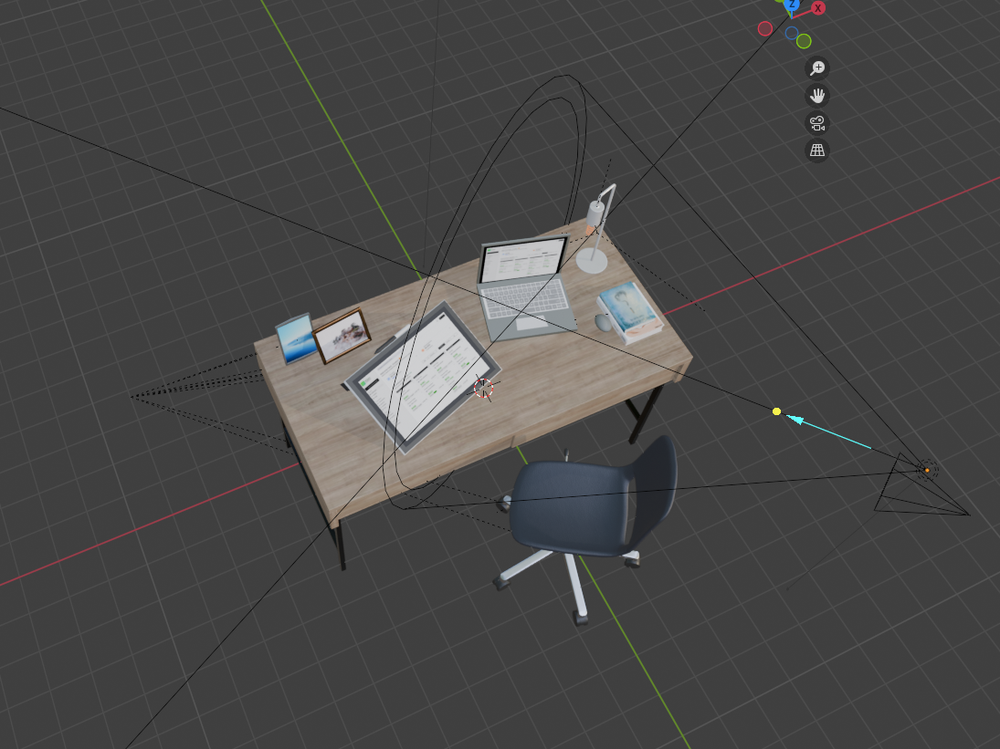
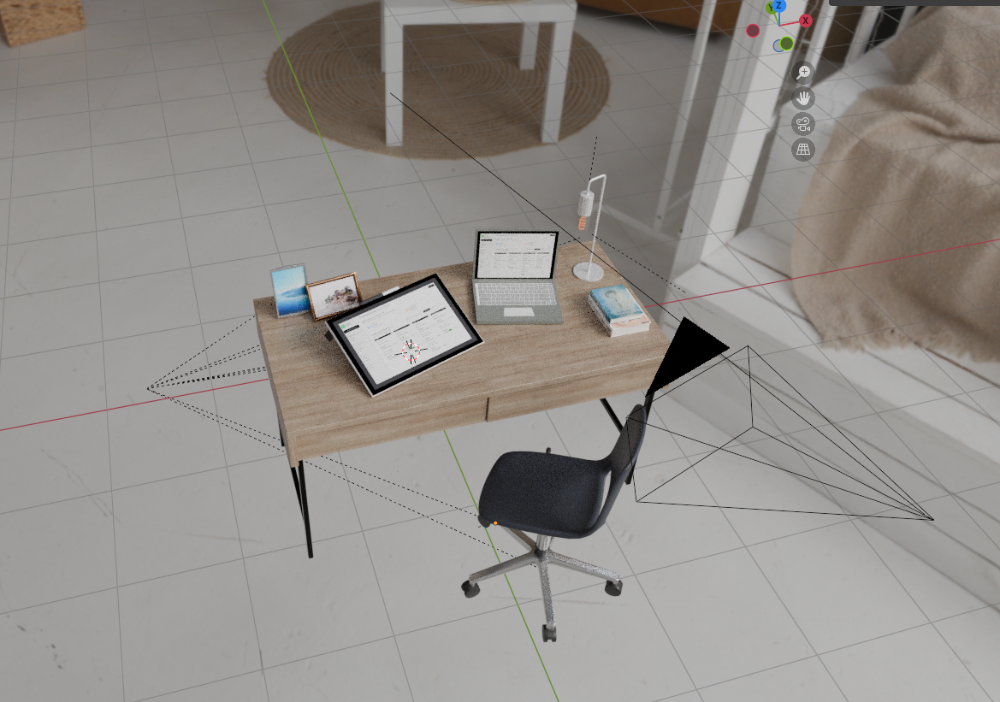

The dashboard design I am working on is for creative freelancers to manage their project, in terms of how they want to track their progress, deadlines, and payments of each commission/projects.
Since the dashboard is a website application, I imagine the scene of users using it will be with their creative workspace, which usually includes a desk, a chair, a laptop, some stationary, and a drawing tablet. I drafted some sketches of how I want the scene to look like below:
I start with creating the digital devices that I planned to display the dashboard UI on. I first strart with the laptop. I used a cube as the base of the laptop and a cube for the screen. I use insert (i) and UV editing to create the faces for keyboard, touchpad, and screen.
I then created the drawing tablet with a similar method, using a cube as the base and inserting faces for the screen.

Having a follow-up work session in week 6, I learned how to set up lighting for my project so that my dashboard design can be better showcased. Professor Maxim Safioulline also helped me tremountously to adjust my lighting so it looks better.
Further, struggling to built a relatively nice 3D-model, my classmate asked whether we could use online resources for creating the Blender file. Knowing that we can use pre-existing materials for our dashboard scenarios, I am very relieved so that I can use pre-built materials for a better appearance instead of struggling to create everything by hand. It is a very important learning lesson to me: build smarter, not harder.
I used two online existing 3D-models that are shared on Sketchfab to create a drawing tablet, and a desk set scene with a desk, a chair, a desk lamp, a few books and a few photo frames.

I also encountered an issue, where I keep getting a crash error message while adding more materials and
trying to render then accordingly. The error consistently pops up when in a render view, making the modeling
process challenging. I hence tried to troubleshoot it by multiple ways, where I installed the newest driver of
my GPU and closed other tabs for less memory usage. The apporach does not seem to make a difference, so I looked up
online
and Google recommanded tring to make the file smaller but resizing the materials.
I then realized that my materials are surprisingly very big compared to materials that I downloaded online. After resizing them,
the crashing issue has been much better. Probelms have been solved.
I find a very good HDRI file online, where it offers a white and clean studio HDRI scene, so that I can showcase my audience what kind of scenrios I imagine my dashboard design will be in. I still have to figure out where should I put my materials so that the render image is presenting its best appearance. I also found this link very helpful to remind me how I can add HDRI to my background.
I am struggling a little bit with the path of cameras, where I added a path but struggled to grab the edges to create a curve shape that I ideate initially. I first tried to align the straight path to the camera in position, but later found out that my path line is too long for this scenrio. Hence, I resied it again according to the scene. I can also delete the vertices that I do not need.
Now that I have a path I am relatively happy with, I attach my camera to the path to see the actual render effect. After attaching, I was confused about why my camera changes its aim along the animation, where I realized that I forgot to focus my camera specifically on the object by using "Track to". I also have to decide whether I want my camera focus on drawing tablet or should I create a plane so that the camera will focus on the desk.
Now that the path and track are set, I still have encountered many issues. For instance, my camera keeps moving even when it reaches the end of the path. Further, when I render images and animations, it took me forever to render.